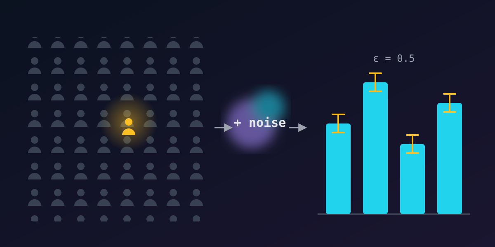

// privacy & data · 6 min read
Differential privacy: learning from data without learning about you
Published Nov 11, 2026

Hospitals, governments and app makers sit on data that could answer important questions. The same data could also reveal deeply personal facts about the people in it. For years the answer was "just anonymise it". That turned out not to work. Differential privacy is the mathematically rigorous alternative.
Why "anonymous" data isn't
Removing names is not enough, because the remaining details act as a fingerprint. Researcher Latanya Sweeney showed that about 87% of Americans can be uniquely identified by just their ZIP code, birth date and sex. In 2008, researchers re-identified some users in Netflix's "anonymous" movie-rating dataset by matching it against public reviews.
Even publishing only totals can leak. If a report says 40 employees earned a bonus on Monday and 41 on Tuesday, and you know exactly who joined the list on Tuesday, you've learned something about one person.
The promise
Differential privacy flips the question. Instead of "is this data anonymous?", it guarantees this:
The strength of that "almost" is a number called epsilon (ε), the privacy budget. Smaller ε means the outputs with and without you are harder to tell apart, so privacy is stronger.
How: add just enough noise
The standard trick is to add random noise to each answer. For a count ("how many people have condition X?") one person can change the true answer by at most 1. So the system adds random noise, typically from a Laplace distribution, scaled to 1 / ε. A true count of 1,203 might be published as 1,198 or 1,207.
Across a large group, a few units of noise barely matter. For any single person, it hides whether they were there at all.
Try it: the coin-flip survey
The oldest version of this idea is randomized response. Ask a sensitive yes-or-no question, but tell each person to flip a coin first: on heads, answer truthfully; on tails, flip again and answer "yes" for heads, "no" for tails. Any single "yes" is deniable, yet because the noise is known, the true rate can be recovered from many answers.
Where it's used
- The 2020 US Census applied differential privacy to its published statistics.
- Apple and Google use local differential privacy to learn things like popular emoji or common crashes without collecting individual users' exact data.
- Researchers increasingly use it to train machine-learning models that can't memorise individual training records.
The trade-offs
- Privacy has a budget. Every published answer spends some ε. Answer enough questions and the noise can be averaged away, so systems must track total spend.
- Small groups get noisy. Noise that's invisible in a city of a million can swamp a village of 50, which raises hard fairness questions for things like census data.
The takeaway
Differential privacy replaces a vague promise ("we anonymised it") with a measurable one ("your presence changes the output by at most ε"). It's not free, because accuracy is the price, but it's the strongest tool we have for learning from people's data without exposing them.